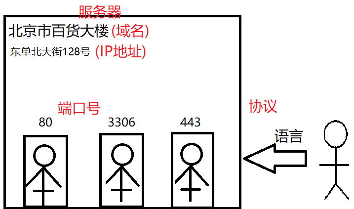

day01_server
1.前端课程体系
(1)服务器端开发：项目导入/数据库/JS基础/服务器开发
(2)前端核心技术：HTML/AJAX/CSS/bootstrap
(3)前端进阶技术：JS高级/BOM&DOM/jquery/VueJS
(4)H5移动端开发：H5/微信开发/HybridApp
(5)框架技术：Angular/React/Python
Windows中常用的快捷键
Window+e: 打开资源管理器
Backspace(退格): 后退
Window+d: 显示/隐藏桌面
Alt+Tab: 向右切换窗口
Alt+Shift+Tab: 向左切换窗口
Alt+F4: 关闭当前的窗口
Window+r: 打开 “运行”窗口 cmd/mspaint/calc
F2: 修改文件名称
Delete: 删除文件
练习：不适用鼠标——进入到 c:/xampp/htdocs目录，创建一个目录web1903，进入，创建文件demo.html，使用编辑器打开，输入一些内容，保存关闭后，使用浏览器打开该文件；删除demo.html和web1903目录
3.软件工程
Ada -> Bug ->Debug
软件作坊：开发软件的小公司
IBM -> Dos -> Bill Gates -> Microsoft -> Windows
程序设计阶段 -> 软件设计阶段 –> 软件工程
软件工程：研究和应用如何系统性的、规范化的、可定量的过程化方法开发和维护软件。
目标是在给定成本、进度的前提下，开发出具有有效性
、可维护性、可重用性、可移植性的软件产品。
4.软件过程/软件生命周期
(1)软件定义期
1)可行性研究阶段
技术、经济(资金)、时间、设备、政策法规、风俗、回报率
2)需求分析阶段
功能性需求、非功能性需求
(2)软件的开发期
3)概要设计阶段
子系统、模块、各自的功能、模块间的接口
4)详细设计阶段
模块实现细节、属性、方法、算法
5)编码实现阶段
后端工程师
前端工程师
UI设计师
6)项目测试阶段
(3)软件维护期
7)项目部署阶段
部署到服务器
8)项目维护阶段
5.学子商城功能性需求
www.codeboy.com
www.codeboy.com/admin/login.html
前台/APP：
产品模块：首页、列表、详情
用户模块：注册、登录、用户中心、收藏夹
购物车模块：添加购物车、修改、删除、下单
后台：
产品模块：添加、修改、删除、列表
用户模块：列表、修改、删除
订单模块：列表、修改
6.web项目中的服务器
服务器(Server): 为客户端提供各种服务的功能强大的计算机。
访问服务器：
(1) 服务器的地址: 域名/IP地址
(2) 所对应服务的端口号
(3) 提供该服务所使用的协议

以访问学子商城为例
http://www.codeboy.com:80
协议 域名/IP地址 端口
7.访问自己电脑创建的web服务
启动web服务器 /webserver/start.cmd
使用浏览器去访问该服务
http://127.0.0.1:80 通过服务器的IP地址
http://localhost:80 通过服务器的域名
使用局域网的IP地址访问
ipconfig 查看电脑在局域网的IP地址
以太网适配器 以太网 IPv4地址
172.163.100.171
http://172.163.100.171:80
练习：在public下创建4.html，随便输入内容，使用服务器来访问。
课后任务
(1)开启自己电脑的web服务器，让同桌使用局域网IP地址去访问。
(2)复习今天内容
(3)预习，了解mysql